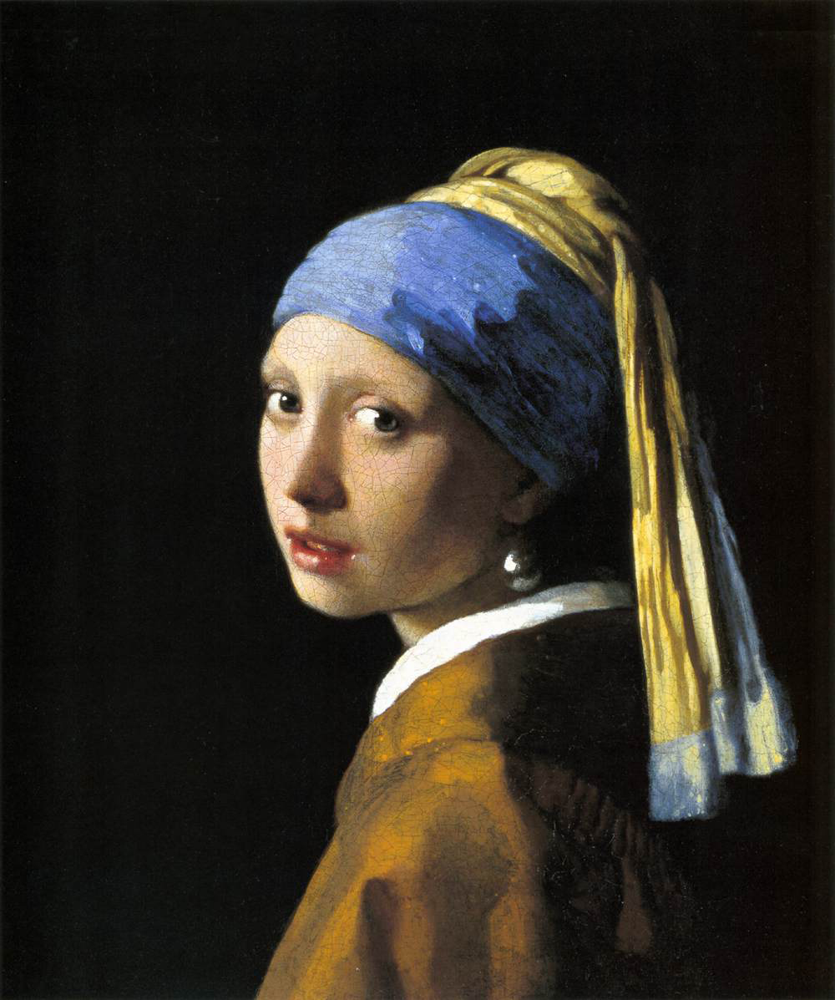

La joven de la perla
Retrato del artista: Johannes Vermeer
Título original: Het meisje met de parel
Museo: Mauritshuis, La Haya (Países Bajos)
Técnica: Óleo (46,5 × 40 cm.)

|
|

La joven de la perla
|
|